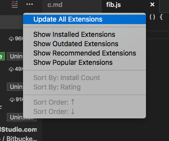
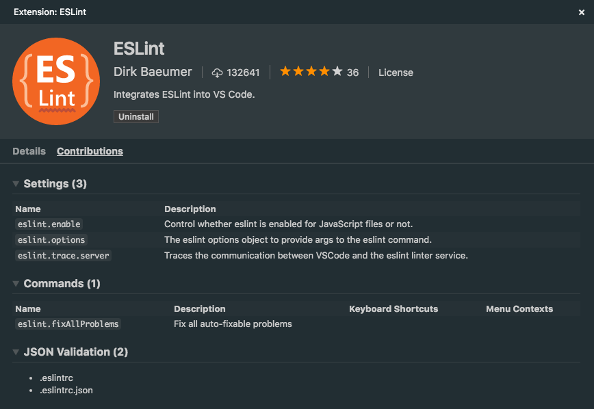
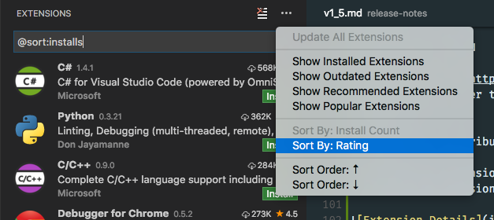
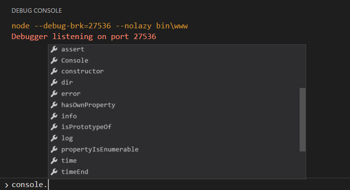
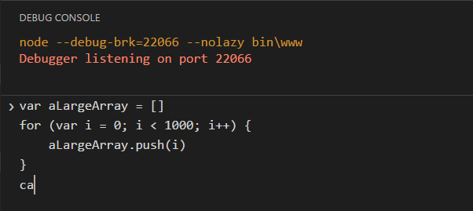
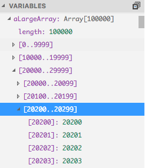
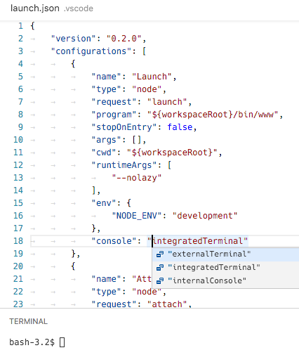

VS Code チームの 8 月はとても大変なひと月でしたが、おかげで素晴らしいリリースを提供することができました。主要なアップデートは UI の更新ですが、拡張機能サポート、デバッグ機能、拡張生を提供する API のサポートなど幅広さに感銘を受けて頂けると考えています。
本リリースのハイライトは以下のとおりです:
- Workbench: ファイルアイコンテーマの実装によりファイルエクスプローラがより便利になります。 VS Code には、2 つのアイコンテーマが含まれていますが、マーケットプレースからより多くのテーマが提供されます。
- Extensions:
- インストール済みとマーケットプレイス上の拡張機能のコントリビューション(コマンド、設定、言語 ID)をすぐに参照することが可能になりました
- インストール回数や評価の並べ替えでマーケットプレイスの拡張機能を検索することが可能になりました
- インストール済みの拡張機能の自動更新および更新可能な全ての拡張機能を一度にアップデートすることが可能になりました
- Editor: ワードラップと自動保存を制御する新しい設定が追加されました。また、大規模なプロジェクトのためにクイックオープンのパフォーマンスを向上
- Languages: VS Code で、より簡単に TypeScript 2.0 RC を使用するための構成設定を追加。任意の言語に Emmet サポートを追加可能に
- Debugging: デバッグコンソール REPL のために IntelliSense と複数行の入力をサポートしました
- Extension Authoring: Expanded editor command API to support VIM emulation. New TextMate theme settings for finer theming control.
Workbench
File Icon Themes
ファイルエクスプローラは、File Icon Themes の機能追加により、ファイルのアイコンを表示することが可能になりました。
- グローバルメニューから設定する方法: File > Preferences > File Icon Theme (Mac では、 Code の配下にある Preferences メニュー内にあります)
- コマンドパレット (⇧⌘P (Windows, Linux Ctrl+Shift+P)) から呼びす Preferences: File Icon Theme コマンド
デフォルトでは、ファイルのアイコンセットが設定されていないため、ファイルエクスプローラにはアイコンは表示されません。
アイコンテーマが選択されると、テーマが適用され、再起動後も有効になります。
VS Code 1.5 には、ファイルとフォルダのアイコンのみで構成されるシンプルなアイコンテーマ: Standard が含まれています。
Visual Studio Code Minimal icon theme:
The Visual Studio Code Seti icon theme:

Credit goes to Jesse Weed and all contributors to the popular Seti UI theme for the fantastic Seti UI icons.
Key binding support within the Integrated Terminal
A new setting terminal.integrated.commandsToSkipShell was added that contains an array of commands that skip processing by the shell and instead are processed by VS Code’s key binding system. This allows keys such as F1 to now work while focus is in the terminal.
Editor
Editor settings
You can now disable the current line highlight via editor.renderLineHighlight.
Thanks to PR #10515 from Nagaraj (@ramamurthynagaraj), you can now customize the editor’s font weight via editor.fontWeight.
Thanks to PR #7029 from Ashhar Hasan (@hashhar), there is a new setting editor.wordWrap that toggles word wrapping and respects editor.wrappingColumn.
フォーカスを失ったときに未保存状態のファイルを自動保存 (Auto Save when application loses focus)
ウィンドウを切り替えをトリガーにファイルを自動保存(files.autoSave setting)する、新しい onWindowChange 設定を追加
Quick Open got a lot quicker
過去 2 回の Iteration に渡り、大規模なワークスペースのために行った改修ではクイックオープンが速く動作するように見えていました。
例えば、’大規模’ とは ‘Chromium-repository-large’ のようなものです。新しくクローニングされた Chromium リポジトリには、220,000 以上のファイルが含まれています。
我々の開発マシンにおけるクイックオープンでは、バージョン 1.3 の約 30 秒から、バージョン 1.5 では約 3 秒になりました。これは、キャッシュを利用していない時のパフォーマンスです。
我々はキャッシュの使用を前提に、0.5 秒台の結果を得るようにします。
Since we start updating the caches immediately when the user invokes Quick Open and don’t block the UI thread when we read from the caches, the 0.5 seconds is pretty much the perceived end-user performance even when the caches were out-of-date. As said, this is for the Chromium repository.
ユーザーがクイックオープンを呼び出すときに、すぐにキャッシュの更新を開始し、キャッシュから読み込まれたときに UI スレッドをブロックすることはなく、0.5秒と言う値は、キャッシュが期限切れのであったとしても、感知されるエンド・ユーザーのパフォーマンスはかなりあります。述べたように、これは Chromium リポジトリのためのものです。
あなたのフォルダが小さい場合は、0.5秒を待つことはなく、実際には、全く待つ必要はありません。
Keep Quick Open visible even when focus is outside
フォーカスがウィジェットの外に移動したときにクイックオープンを閉じるべきかを制御するために新たな設定 workbench.quickOpen.closeOnFocusLostを追加しました。
デフォルトでは、クイックオープンは閉じますが、VSコードの外にフォーカスがある場合であっても開いたままにするには false に設定します。
フォーカスが移動した場合でも、クイックオープンを開いたままにする新しい設定 (New setting to keep Quick Open visible even when focus is outside)
フォーカスの移動に影響されるクイックオープンウィジェットの開閉を制御することが可能な新しい workbench.quickOpen.closeOnFocusLost 設定を追加しました。
デフォルトでは、フォーカスが移動するとクイックオープンは閉じますが、設定により、それを開いたままにすることが可能になります。
Include symbol results in file Quick Open results
ファイル検索のクイックオープンに表示されるシンボルを抑制するための新しい設定 search.quickOpen.includeSymbols を追加しました。
以前のリリースでは、一般的なファイルピッカー内にシンボルの結果を含んでいましたが、問題を抱えているためこれをオプションにしました。
シンボルを含む以前の動作に戻す必要がある場合は、このオプションを true に設定してください。
この設定を有効にするとグローバルシンボルの結果を返すための検索に時間を必要とします。そのため、全体的なファイル検索速度が遅くなることに注意してください。
Note: Show All Symbols (⌘T (Windows, Linux Ctrl+T)) コマンドを使用して、グローバルシンボルを検索することができます。
New actions to move Tabs left or right within a group
エディタグループ内においてタブを右または左に移動することを可能にする新しいアクションが追加されました。
素早いアクセスを得るために workbench.action.moveEditorLeftInGroup と workbench.action.moveEditorRightInGroup にキーバインドを割り当てることができます。
エディタのグループ内にて、タブ(タブのヘッダ)を右または左に移動するための新しいアクションが追加されました。
追加された 2 つのアクションとそれらのデフォルトキーバインドは下記のとおりです:
| Action | Command Palette | Key Binding |
|---|---|---|
workbench.action.moveEditorLeftInGroup | エディタを左に移動 | ⌘K ⇧⌘← (Windows, Linux Ctrl+Shift+PageUp) |
workbench.action.moveEditorRightInGroup | エディタを右に移動 | ⌘K ⇧⌘→ (Windows, Linux Ctrl+Shift+PageDown) |
Closed editors reopen at their previous index
直前に閉じられたエディタを再呼び出しするアクション workbench.action.reopenClosedEditor (⇧⌘T (Windows, Linux Ctrl+Shift+T)) を新たに提供します。
このリリースでは、エディタはクローズされる前と同じ順序を維持し、同じインデックスで再開されます。
Mac OS: Cmd+E に割り当てられたクイックオープンの無効化 (Mac OS: Cmd+E no longer opens Quick Open)
ファイル検索のためのクイックオープンを起動する(ドキュメント化されていない)キーバインドを削除することを決めました。 Cmd+E の動作を以前のバージョンに戻したい場合は、キーバインディングの構成を設定します:
|
この変更の背後にある理由として、Mac OS における Cmd+E には、現在アクティブなファイル内の検索を実行する機能が主として割り当てられているためです。
Languages
TypeScript
Visual Studio Code には TypeScript の正式にリリースされたバージョンがバンドルされています。8月のリリースでは、バージョン 1.8.1 になり、9月中に、バージョン 2.0 が利用可能になる予定ですが、npm install -g typescript@rc を実行することによりリリース候補版をインストールすることもできます。
異なる TypeScript バージョンを VS Code 上またはコマンドラインツールから利用するとバージョンに依存したエラーによりビルドツールが混乱してしまいます。当然ですが、2.0 でサポートされた機能は 1.8.1 では利用できません。もし、VS Code 上で TypeScript の新しいバージョンを使用したい場合は、typescript.tsdk 設定を使用します。詳細は マニュアル を参照してください。
VS Code は、ワークスペースフォルダに任意の TypeScript バージョンが含まれていることを検知します。(npm install typescript@x.x.x 経由でインストールされたもの)
VS Code は、ワークスペースにインストールされた TypeScript を検出かつ typescript.tsdk 設定が使用されていない場合、VS Code にバンドルされる TypeScript バージョンをユーザに通知し、バンドルバージョンを使用するかどうかを尋ねます。
More Information アクションは、常にローカルにインストールされた TypeScript のバージョンを使用するよう VS Code を設定する方法のドキュメントを表示します。
VS Code では、TypeScript 言語サーバがグローバルにインストールされている tsc コンパイラと差異があるかをチェックします。
異なる場合は、対応する情報メッセージが示されます。
HTML
組み込みのコード補完プロバイダをアクティブにするかを制御するために、新しい設定が追加されました。対応するサジェスチョンを参照したくない場合は、これらの設定を使用します。
|
LESS
LESS 構文の検証は、最近 LESS に追加された機能の一部をサポートするために、最新のものを取り込んでいます。次のものが含まれます:
- Named Parameters in Mixins
- Mixins as functions
- Passing Rulesets to Mixins
- CSS Guards
- Merge
これらの機能の詳細については、LESS ドキュメントを参照してください。
Settings to enable/disable Emmet for languages
新しく追加された emmet.syntaxProfiles 設定を利用することで、他の言語と既存の Emmet 構文プロファイル (例えば html、css など) を関連付けることができます。設定は、言語 ID を受け取り、Emmet プロファイルに関連付けます。
例えば、JavaScript で Emmet HTML 略語を使用するには下記のように設定します。
|
emmet.excludeLanguages 設定を使用して特定の言語における Emmet 略語の使用を無効にすることができます。
次の設定は、PHP ファイル編集時に Emmet を無効にします:
|
Linter Extensions
vscode-eslint と vscode-tslint 拡張機能を、ファイル保存時に実行することを可能とする設定を追加しました。
|
Extensions
Easier Updates
すべての拡張機能を更新するためのアクションが用意されました。

さらに、extensions.autoUpdate 設定を true に設定すると、ユーザーの介入なしに拡張機能を自動更新できるようになります。
Extension Contribution Details View
VS Code で拡張機能を閲覧すると、
拡張機能をインストールする前に、各拡張機能のコントリビューション・ポイントを表示する Contributions セクションを VS Code の拡張機能閲覧で参照することが可能になりました。

Extension Sorting
拡張機能ビューにおいて、インストールカウント以外の方法で拡張機能を並べ替えることができるようになりました。

Marketplace Performance Improvements
マーケットプレースは、ダウンロード時間とダウンロードと拡張クエリの可用性を改善するために、CDN に刷新されました。
Debugging
Suggestions in Debug Console
VS Code ユーザからの要求)により、デバッグコンソール で、入力中の内容に関するサジェスチョンを示すことが可能になりました。
現時点では、この機能は Node.js デバッグのためにのみ利用可能ですが、将来的には他のデバッガで使用できるようになる予定です。

Multi-Line Debug Console Input
The Debug Console input now expands to multiple lines when needed. The expansion can be triggered using Shift + Enter.
デバッグコンソール入力は現在、複数行に展開されます。拡張はkbstyle（Shiftキーを+ Enter）を使用してトリガすることができます。

Multi-Level Variable Paging
子供の数が多いデータ構造は、マルチレベルのチャンクにより表示されます。これは、より良いパフォーマンスをもたらす他、簡単に多数の子を横断することができます。

Node Debugging
Launch debug target in Integrated Terminal
Integrated Terminal で Node.js デバッグターゲットを起動できるようになりました。
対話型端末からの読み取りやそれらが実行されている端末上の出力を制御する必要があるような Node.jsベースのコマンドラインアプリケーションを開発する際に役立ちます。
Node.js プログラムを実行するために 3 つのオプション (Debug Console, Integrated Terminal, 外部コンソール)を提供してきましたが、このリリースから launch.json の externalConsole 属性を非推奨とし、新しい属性 console を導入し、次の値を設定できるようにしました: internalConsole, integratedTerminal, externalTerminal

注意: VS Code は、internalConsoleOptions 属性に構成されたオプションに応じて、統合ターミナル を非表示にして Debug Console を開きます。
これを避けるには、 internalConsoleOptions へ neverOpen を設定してください。
注意: このリリースでは、すべてのデバッグセッションは、新しい統合ターミナルを作成します。
次のリリースでは、可能な場合は、既存の統合ターミナルを再利用する実装を予定しています。
Extension Authoring
Note: VS Code 8月のリリース版では、TypeScript
1.8.10の正式版がバンドルされ、拡張機能の開発は、このバージョンを使用して行われるべきです。将来のリリースにおいて、拡張機能の開発のために TypeScript2.0.xをサポートする予定です。
Editor Commands
VIM 拡張機能のロードマップを実現するために、特にウィンドウのスクロールや折り畳みに関連する新しい API をエディタに追加しました:
- Scroll editor: エディタ画面の上下スクロール - See 9609.
|
- Reveal line: エディタ上で異なる論理位置とラインを明確にする - See 9609.
|
- Fold: 現在のカーソルの上または下または
nレベルでエディタのコンテンツを折りたたみます。
|
- Unfold: 現在のカーソルの上または下または
nレベルでエディタの折りたたまれているコンテンツを展開します。
|
Powerful Completion Items
Completion Item は、追加のテキスト編集や追加のコマンドをサポートしました。
これらを使用すると、さらに高度な補完が可能になります：
- シンボルを補完したときに import 文を追加
- 補完後、プロジェクトにライブラリを追加
Stable Input Box and Quick Open
クイックオープンが開いているか何か入力を求められているときに、フォーカスが VS Code または他のウィンドウの別の部分に移動してもダイアログが閉じないよう制御する、新しい ignoreFocusOut オプションが追加されました。
また、プログラムのキャンセルトークンを使用してそれらを閉じることができます。
New context menu keys
キーバインディングとメニュー項目をより細かく制御するための新しいコンテキストキーを追加しました：
explorerResourceIsFolder- エクスプローラ上でファイルまたはフォルダが選択された場合に反映されますresourceFilename- エディタ/エクスプローラで現在アクティブなファイルの名前
New Theme Settings
このリリースでは、TextMate のテーマの設定として、以下の内部の色を公開すると共に、テーマの作成者は、自分たちのテーマでそれらをカスタマイズすることが可能になります。
rangeHighlight: 範囲の背景色を強調します。これは、クイックオープンと検索機能で利用されます。selectionHighlight: 選択されたリージョンの背景色を強調 Background color of regions highlighted while selecting.inactiveSelection: Background color of selections when not in focus.wordHighlight: Background color of a symbol during read-access, like reading a variable.wordHighlightStrong: Background color of a symbol during write-access, like writing to a variable.findMatchHighlight: Background color of regions matching the search.currentFindMatchHighlight: Background color of the current region matching the search.findRangeHighlight: 検索のために選択された領域の背景色activeLinkForeground: アクティブリンクの色hoverHighlight: ホバーの背景色referenceHighlight: 参照時に全ての参照を見つけた時の背景色guide: 入れ子のレベルを示すインデントガイドの色
Integrated Terminal API
An API has been added that provides extensions with some basic control over the integrated terminal like creating terminal(s) and sending text to them. See the window API reference page for a full description of the API.
Additions to the Debug Protocol
debug protocol は、次の領域（とVSコードが既に対応する提供済みの UI）に拡張されています:
IntelliSense Support for the Debug Console: デバッグアダプタは、Debug Console で IntelliSense によるサジェスチョンの提案を提供するために、
completionsリクエストを実装することができます。VS Code でこの機能を有効にするには、 デバッグアダプタが持つsupportsCompletionsRequest機能にtrueを設定する必要があります。Run in Terminal Request: デバッグアダプタは
runInTerminalリクエスト経由で、簡単に VS Code の統合ターミナル上にてデバッグターゲットを実行することができます。(これは、VS Code のデバッグアダプタから最初のリクエストとして呼び出されることで利用できます) Integrated Terminal は、Debug Console の代替となり、対話型端末からの読み取りおよび/またはそれらが実行されている端末上で、出力を制御する必要があるコマンドラインアプリケーションのより良い開発をサポートします。runInTerminalが呼び出される前に、initializeリクエストがsupportsRunInTerminalRequestアトリビュートとその値がtrueであることをフロントエンドクライアントサポートが検証します。
初期化要求に渡された引数は、その値がtrueであることをsupportsRunInTerminalRequest属性を持っているとことを確認することによって、それをサポートしています。
Engineering
Originally started with PR #9791 from Manoj Patel (@nojvek), we now have test coverage for our TypeScript files updated on each build.
Notable Changes
- 6602: Add scroll bar to integrated terminal
- 8499: Cannot distinguish different files with the same path.filename(x)
- 8983: Closing a dirty split editor (existing OR untitled) should not affect the initial editor
- 9405: Resizing terminal only resizes the active terminal instance
- 9589: Save: Flush to disk after writing to file
- 9675: Undo/Redo adds a stop in between CHN Characters
- 9822: Terminal IME composition view appears on top of text when at the bottom of the screen
- 9937: Increase rule stack protection limit - Syntax highlighting broken in JS with multiple nested functions
- 9962: Explorer can freeze for large folders and many glob patterns
- 10100: Terminal cursor does not invert text color
- 10148: After updating to 1.4.0 the react-native extension no longer accepted as a debugger
- 10302: Support standard keybindings for scrolling terminal by one line on each platform
- 10360: File rename can close editors
- 10586: TabCompletionController causes severe perf hit
クローズされたバグ一覧と、1.5アップデートにてクローズされた機能のリクエスト一覧です。
Monaco Editor 0.6.0
We will create monthly releases of the “Monaco” Editor, in the same rhythm with VS Code. You can see the change log here.
VS Code と同様の間隔で、”Monaco” エディタを毎月リリースします。change log は こちらで参照することができます。
Downloads
Thank You
最後になりましたが、VS Code をより良いものにするために協力してくれた下記の方々に多大なる感謝を込めて：
- Karsten Thoms (@kthoms):
- Typo: Header File Name -> Header Field Name PR language-server-protocol#43
- Consistent text style PR language-server-protocol#44
- Typo fixed PR language-server-protocol#45
- Consistent use of suffix ‘Request’ in headers PR language-server-protocol#46
- Nagaraj (@ramamurthynagaraj):
- Jared Hester (@cloudRoutine):
- Fabian Lauer (@FabianLauer):
- Sandy Armstrong (@sandyarmstrong):
- Natacha Gabbamonte (@natgabb): Fix params link under Completion Request PR language-server-protocol#42
- Quinn Slack (@sqs): Print child process stderr to output channel PR vscode-languageserver-node#83
- Kaloyan Raev (@kaloyan-raev): Contribute JSON Schema for composer.json PR #10698
- Eshwar Andhavarapu (@gontadu): Added .bash_aliases to recognised extensions PR #10651
- Scott Addie (@scottaddie): Update default project.json TFMs PR #9965
- @hm1992: Detect shebang for Groovy files PR #9709
- Toru Nagashima (@mysticatea): Update: supports the range of lint results. PR vscode-eslint#102
- @sprinkle131313:
- Meai1 (@Meai1): Check if adapter is null and let it print errors PR #9966
- Rajkumar Janakiraman (@rajkumar42): Improve evaluate on hover feature PR #9821
- Manoj Patel (@nojvek): Travis builds post coverage info to coveralls.io, README badge PR #9791
- William Raiford (@bill-mybiz): Restore Previous Commit Message on Undo Last Commit PR #9796
- Aldo Fregoso (@AldoMX): Fixed
code.shto start VS Code under Cygwin PR #10508 - Nathan Novielli (@natenovielli): Only ‘git fetch’ if there is a remote repository available PR #10853
- Denis Malinochkin (@mrmlnc): Emmet implementation tweaks PR #11009, PR #11003, PR #11001
- Ashhar Hasan (@hashhar): Fix for issue 1490 PR #7029
- Belleve Invis (@be5invis): Add mouse-keyboard event crossover to prevent menu bar from showing up after multi-selecting PR #9154
- Eric Amodio (@eamodio): Fixes #7749 - Focus on CodeLens click PR #9249
- Christian Alexander (@ChristianAlexander): Allow workspaceContains to specify directories PR #9394
- Grant Mathews (@johnfn): Fix flipping axes behavior PR #10322
- Pavel Kolev (@paveldk): Fix sending message to terminated worker PR #10833
- Jun Han (@formulahendry): Run entire text in terminal if selection is empty PR #9480